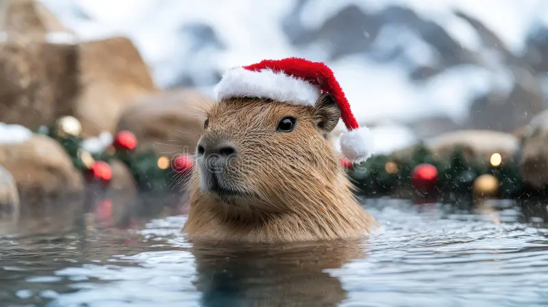

Capibaras |
|||
| Es originario de América del Sur y se puede encontrar merodeando por los bordes de los pantanos fangosos, nadando en los estanques de las junglas y comiendo bocadillos en las praderas inundadas. |  | Al igual que algunas especies de conejos y liebres, los capibaras consumen su propio excremento. En biología, esta práctica se conoce como coprofagia y es relativamente común en el reino animal. | |
|
|
||
| Son primos lejanos de las ratas | |||
| Roedores | Miden entre 50 - 60m | Pesan: 35 - 60kg | Nombre científico: Hydrochoerus hydrochaeris |